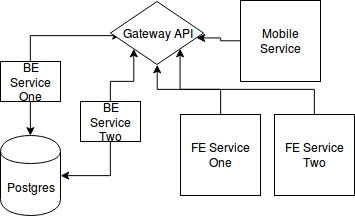

Lessons Learned
from integrating Django & GraphQL
Created by
Krzysztof Żuraw
Who I am?
Python and JavaScript Developer at
STXNext
based in Wrocław.
Lesson 1: GraphQL is cool
if you know how to use it
Technology stack
